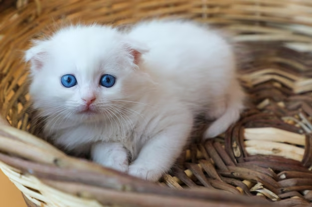
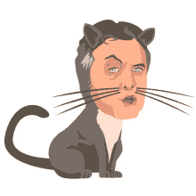

CONTACTO PARA ADOPTAR
Curiosidad sobre gatos
- Los gatos han estado con los humanos durante casi 10 000 años
- Los primeros gatos domesticados eran hábiles cazadores
- Los egipcios admiraban a los gatos por su naturaleza compleja y dual.
- Los gatos tienen 230 huesos, los humanos tienen 206.
- Todos los gatos recién nacidos tienen los ojos azules. Tardan varios meses en alcanzar su color definitivo.
- Además de con la nariz, los gatos huelen con un órgano, llamado de Jacobson, situado en la parte superior de la boca.
- Alcanzan la madurez a los 5 años y su tercera edad sobre los 10 años.
- Su lengua está formada por diminutos”ganchos”, que utilizan para atrapar y desgarrar el alimento.
- Los estadounidenses gastan anualmente más dinero en comida para gatos que en comida para bebés.
¿Cual es el mejor gato de todos?
El mio


Gatos en adopción
Pelusa
Michifus
Macri
